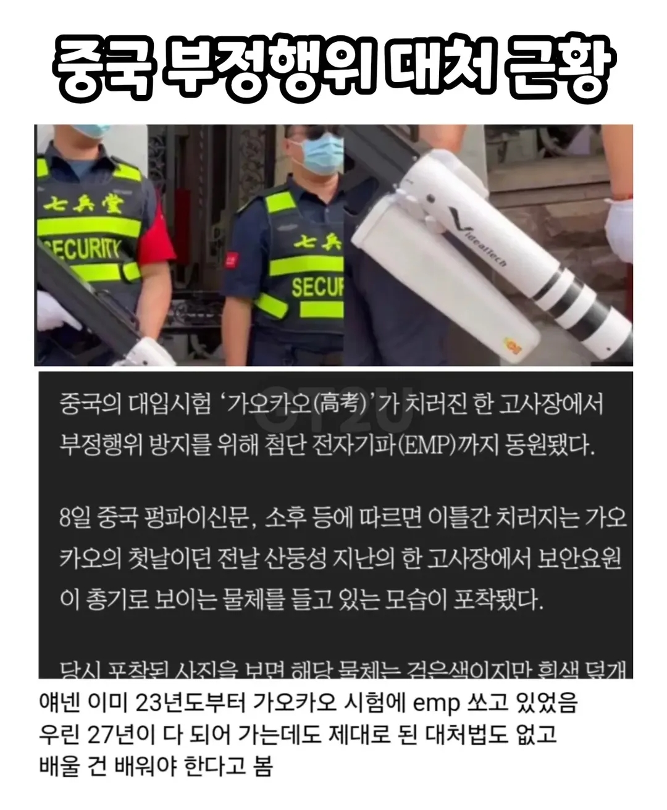

중국 시험 부정행위 대처.jpg
댓글
과학기술이 발전할수록 통제하기 쉬워짐. 기술 발전의 아이러니
저 기술은 한국 일본 미국 다 있음
중국이 대단한건 저걸 민간에다가 뻥뻥 쏠 수 있다는거고
공산주의는 테크노크라시를 좋아하는편
저게 앞서는거냐 존나 막무가내인거지 ㅋㅋㅋㅋㅋㅋ
당장 전기차랑 자율주행만 봐도..
국가나 기업이나 대처나 경쟁력이 정말 미흡하고 느림 아 중국말고 우리
높으신 분들 자제분들도 저걸로 꿀 좀 빨았을 수도 ㅋㅋㅋㅋㅋ
시험을 보는 사람이 합격을 결정하지 않는다
emp를 쏠지 결정하는 사람이 모든것을 결정한다!
페이스메이커나 인공 와우 쓰는 사람은 어캄
안경 시계 내려놓고 저거 쏘고 가져가면되지
페이스메이커는 몸 속에 이식하는거라....
이렇게보니까 존나위험하네
페이스메이커는 미리 파악하고 그런 부류 사람들은 별도의 시험장에서 emp 안쏘는 대신에 검사 철저히 하면되지
안경 벗기고 거기에다 쏘면 되죠?
중국이니까 가능
나도 검색해보니까 정상적인 나라면 전파법 위반이라 통신방지 교란행위가 위법이라 법적 절차를 국가차원에서 마련해야함
그리고 이미 전자파나 전자기기 사용 감지기 같은거로 어느정도는 잡고 있더라고
중요한 국가고시는 시험실 전자파 차폐나 열감지기 같은거 도입해야 할듯함
시험을위해 배슬이 emp쏜다는 상상하니까 좆간지네
안경만 따로 벗어서 쏘면 될 거 같기도...
그런데 어떤 부작용이 또 있을지 몰라서 난감하네
안경태에 커버같은거 씌우면 안되나? 실리콘 장갑같은 재질로 늘어나게 해서
핵 쓰는거에 누구보다 진심인 놈들이라 그런가 막아야 할 때도 진심으로 막네
이제 고위층 자녀가 시험을 보러가면 결탁해서 가짜emp를 쏘는거임
프린세스메이커ㄷㄷㄷㄷ
EMP 쏘고 WIFI, LTE, 5G 대역 재밍걸면 되는거 아니냐 일단 내 회사는 사무실에 wifi 재밍 걸려있어서 핫스팟 못씀 ㅋㅋㅋㅋ
공공기관 다님?
ㄴㄴ 일반 사기업임... 개불편함
안티 드론건 있을텐데 ㅋㅋㅋ
저거 대드론용임?
저긴 민도가 바닥이라서 진짜 중급 닌자시험이잖아 ㅋㅋㅋ
와 이런 최첨단은 진짜 중국이 젤 앞서네 ㅋㅋㅋ
가장 보수적 정치 집단을 가진 나라가
과학 기술 접목은 젤 빠르네
아이러니하네